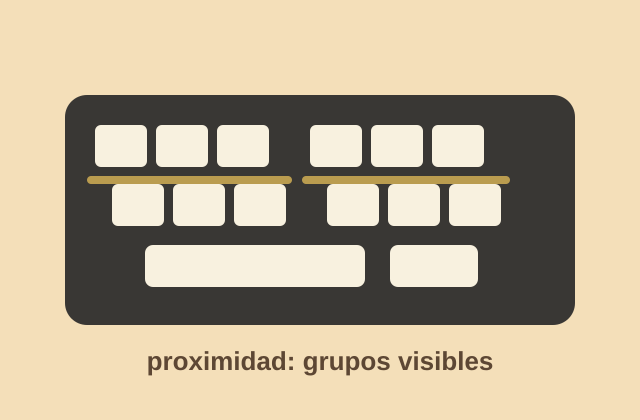
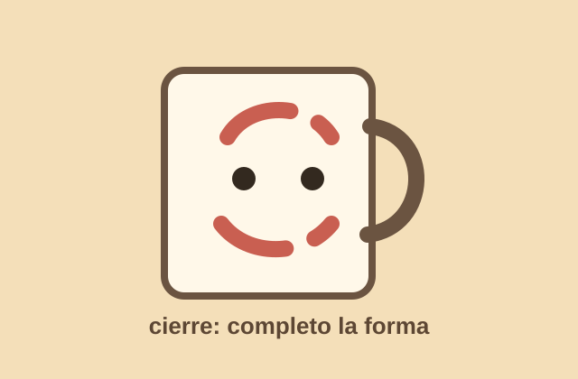
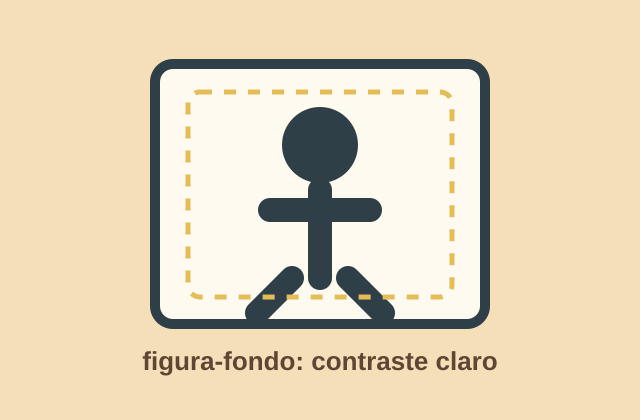

Teclado de mi laptop
En el teclado noté el principio de proximidad. Las teclas están separadas por grupos y eso me ayuda a entender rápido dónde están las letras, números y funciones. No leo tecla por tecla: mi vista agrupa zonas.
Semana 1
Esta semana me fijé en objetos normales que normalmente uso sin pensar. Me pareció curioso notar que mi mente completa, agrupa o separa información casi sin pedir permiso.

En el teclado noté el principio de proximidad. Las teclas están separadas por grupos y eso me ayuda a entender rápido dónde están las letras, números y funciones. No leo tecla por tecla: mi vista agrupa zonas.

Vi una taza con un dibujo cortado y aun así mi cabeza completó la figura. Ahí aparece el principio de cierre, porque no necesito ver todos los bordes para reconocer la forma.

La señal funcionaba por figura-fondo. El ícono oscuro resaltaba sobre un fondo claro y entendí de inmediato el mensaje. Si el contraste fuera menor, creo que se perdería muy fácil.